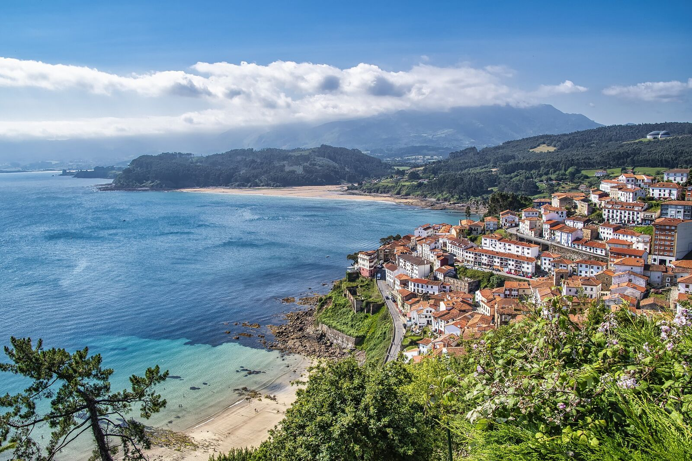

Costa Verde
Asturias, northern Spain
The green coast
Costa Verde ("Green Coast") is the name given to the coastline of Asturias, along the Cantabrian Sea. It covers the old maritime province of Gijón, created in 1845, together with Avilés, created in 2007.

- 345 kmof shoreline
- 5thlongest coast in Spain
- 100 m+high cliffs at Cape Peñas
One of the best preserved coasts in the country.
Land and sea
Geography
Most of the coast sits on a rasa: a flat shelf that runs from the cliff edge to the first slopes of the mountains. It is an old sea floor, once shaped by the waves and now raised several metres above the water, in places more than 100. The eastern coast is a large limestone massif, which explains its rugged rock formations.
The name comes from the fields, which stay green all year round, right down to the beaches. Steep cliffs alternate with long sandy beaches and small coves. Cape Peñas, the northernmost point of the region, splits the coast into its eastern and western halves; its cliffs, over a hundred metres high in places, are a protected landscape.

Some of the best-known beaches
- Rodiles Villaviciosa
- La Isla Colunga
- Torimbia Llanes
- Arnao Castrillón
- San Lorenzo Gijón
Things to do
Activities
The coastal towns keep their fishing traditions alive. Cudillero, Gijón, Llanes, Ribadesella, Luarca, Luanco and Candás are among the most charming.
Wild and with big waves, the Costa Verde is a popular destination for surfing and windsurfing; Tapia de Casariego is one of the favourite spots.